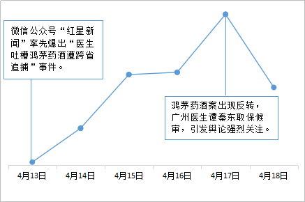
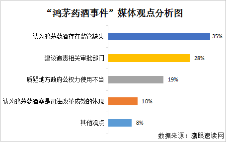
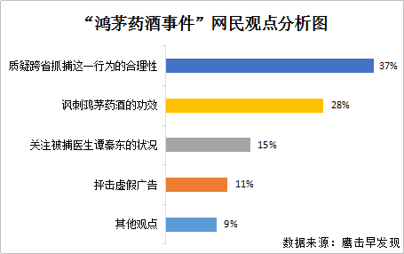

35%的媒体报道涉及鸿茅药酒存在监管缺失，《证券时报》分析认为，鸿茅药酒十年时间，一边是各地食药监管部门不断的违法通报和暂停销售的惩治手段，一边却是内蒙古食药监管部门和广告批文核准部门的广告审批“绿灯”，共1034个广告批文，让鸿茅药酒大行其道，甚至在去年位列投放广告企业第一，这矛盾的存在充满诡异，让人费解，也照见出相关监管的醉态。
28%的媒体报道关于追责鸿茅药酒广告的相关审批部门，“红网”发文指出，一定要对鸿茅药酒违法次数达2630次却继续在全国热卖进行认真调查，看看问题究竟出在哪个环节？如果监管部门工作人员存在玩忽职守、滥用职权、徇私舞弊的情形，应受到处分。对广告审批部门严重失职的行为，也该对其进行追责。
19%的媒体报道涉及地方政府公权力使用不当，“光明网”分析认为，广州医生吐槽鸿茅药酒遭跨省抓捕一案的要害在于地方政府公权力使用不当，以及地方性警权跨域行使所依据法律的模糊性。
10%的媒体报道关于鸿茅药酒案是司法改革成效的体现，《南方都市报》发文分析，鸿茅药酒案俨然已成为本轮司法改革落地成效的一块试金石。《新京报》也分析认为，鸿茅药酒案已经成为一个法治标本，其意义不仅仅在于当事双方的是非曲直，而是我们的司法系统能够向公众提供一种强大而坚韧的体系保障。
另外8%的媒体报道关注鸿茅药酒案件进展情况、鸿茅药酒董事长的身世背景、鸿茅药酒的安全性等内容。

37%的网民观点质疑凉城警方跨省抓捕这一行为的合理性，他们认为医生有用专业知识客观评价药物的权利，即使用词过激，也属于民事纠纷。动用公安跨省抓捕并拘留谭秦东，是将民事纠纷刑事化。
28%的网民观点讽刺鸿茅药酒的功效，认为它部分药材成分含有毒性，而且药材种类过多过杂，不利于人体健康。
15%的网民观点关注被捕医生谭秦东的状况，在谭秦东被关押期间，担心他的人身安全，并呼吁凉城公安尽快放人；在谭秦东被释放后，关心他的精神状态，并支持他继续维权。
鸿茅药酒的广告多次违法并受到处罚，屡禁不止。从2016年开始，鸿茅药酒开始在影视剧中植入广告，而植入广告属于法律监管的灰色地带，11%的网民观点抨击虚假广告，并呼吁加大对虚假广告的监管力度。
另有9%的网民发表了其他观点，主要包括讨论凉城县公安局关闭评论的做法，关注事件的后续进展等。